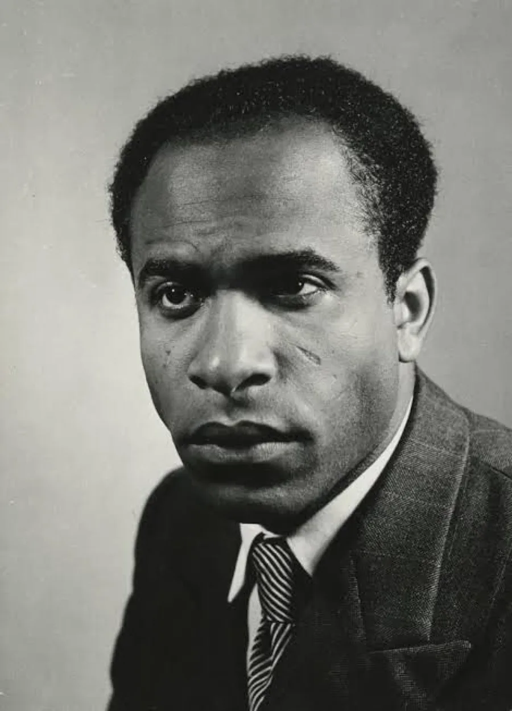
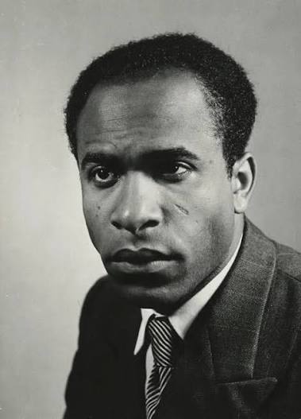

Pele Negra,
Máscaras Brancas1952
Máscaras Brancas1952
Pele Negra, Máscaras Brancas
Mostra como o racismo afeta a identidade e a forma como a pessoa negra se vê.
Vozes da Liberdade
Frantz Fanon foi psiquiatra, filósofo e pensador anticolonial. Ele mostrou como o racismo e o colonialismo ferem não só os corpos, mas também a identidade das pessoas.
Conheça Fanon

Nasceu em 1925, em Fort-de-France, na Martinica, então colônia francesa no Caribe. Estudou medicina e psiquiatria em Lyon, na França.
Na Argélia, chefiou um hospital psiquiátrico e viu de perto a violência colonial. Em 1956, deixou o cargo e uniu-se à luta pela independência argelina.
Cresce numa sociedade de hierarquias raciais.
Luta pela França, é ferido e condecorado. Vê o racismo no próprio exército.
Publica Pele Negra, Máscaras Brancas.
Assume a psiquiatria do hospital de Blida-Joinville.
Renuncia ao cargo e une-se à FLN.
Publica Os Condenados da Terra e morre aos 36 anos.
Toque em um cartão para ver um exemplo.
Mostra como o racismo afeta a identidade e a forma como a pessoa negra se vê.
Analisa o colonialismo, a violência e a descolonização. Tem prefácio de Jean-Paul Sartre.
Conta como a guerra de independência mudou a vida cotidiana na Argélia.
As estruturas que ele descreveu ainda ajudam a entender o presente.
Vai além do preconceito individual: aparece em estereótipos, oportunidades e tratamento desigual.
Representatividade importa para que cada pessoa se reconheça e se valorize.
Ser livre é poder existir com dignidade, sem ter a própria cultura negada.
A Marcha Zumbi dos Palmares (1995) e o 20 de Novembro seguem cobrando reparação e justiça.
Como transformar reflexão em atitudes concretas contra o racismo?
Toque para virar o cartão.
Cinco perguntas para testar o que você aprendeu.
“Cada geração deve, em relativa opacidade, descobrir sua missão, cumpri-la ou traí-la.” Frantz Fanon, Os Condenados da Terra
Obras: FANON, F. Peau noire, masques blancs (Seuil, 1952); L’An V de la Révolution Algérienne (Maspero, 1959); Les Damnés de la Terre (Maspero, 1961). Biografias: David Macey, Alice Cherki, Adam Shatz. Imagens: Wikimedia Commons.